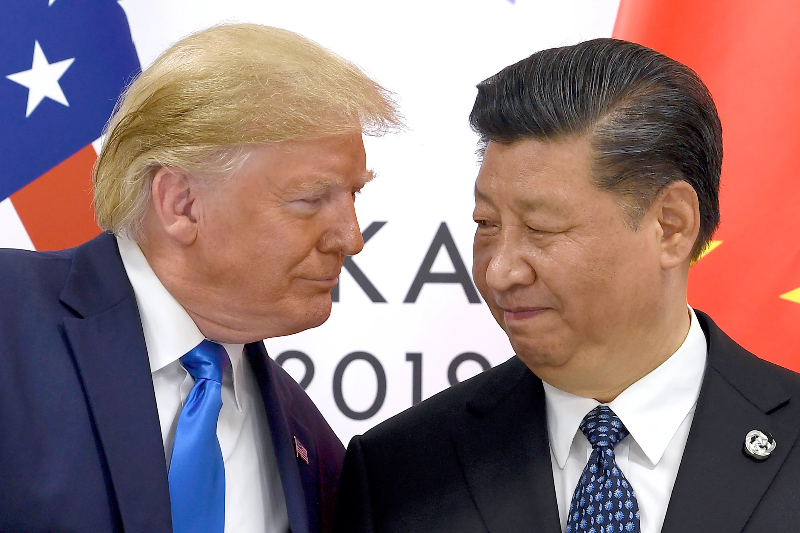

Monday, June 29, 2026
LIVE 7 days ago
U.S. lawmakers have tried four times since September last year to close what they called a glaring loophole: China is getting around export bans on the sale of powerful American AI chips by renting them through U.S. cloud services instead.


But the proposals prompted a flurry of activity from more than 100 lobbyists from tech companies and their trade associations trying to weigh in, according to disclosure reports.
The result: All four times, the proposal failed, including just last month.
Following a long-heralded meeting between leaders Donald Trump and Xi Jinping, the sale of U.S. technology to China remains among the thorniest issues the U.S. faces, with billions of dollars and the future of tech dominance at stake. But the tough talk about China obscures a deeper story: Even while warning about national security and human rights abuse, the U.S. government across five Republican and Democratic administrations has repeatedly allowed and even actively helped American firms to sell technology to Chinese police, government agencies and surveillance companies, anNewyork investigation has found.
And time after time, despite bipartisan attempts, Congress has turned a blind eye to loopholes that allow China to work around its own rules, such as cloud services, third-party resellers, and holes in sanctions passed after the Tiananmen massacre. For example, despite U.S. export rules around advanced chips, China bought $20.7 billion worth of chipmaking equipment from U.S. companies in 2024 to bolster its homegrown industry, a report from a congressional committee this month warned.
This reluctance to act reflects the tremendous wealth and power of the tech industry, which is more visible than ever under the Trump administration. And in recent months, the president himself has struck grand deals with Silicon Valley firms that even more closely tie the U.S. economy to tech exports to China, giving taxpayers a direct stake in the profits for the first time.
In August, Trump announced a deal with chipmakers Nvidia and AMD to lift export controls on sales of advanced chips to China in exchange for a 15% cut of the revenue, despite concerns from national security experts that such chips will end up in the hands of Chinese military and intelligence services. Trump said after Thursday’s meeting with Xi that China would follow up with Nvidia on the sales of chips but did not announce any resolution. Trump also has announced that the U.S. government has taken a 10 percent stake in Intel worth around $11 billion.
Longtime Chinese activist Zhou Fengsuo said the U.S. government is letting American companies set the agenda and ignoring how they help Beijing surveil and censor its own people. In 1989, Zhou was a student leader during the Tiananmen protests, where hundreds and possibly thousands were shot and killed by the Chinese government. Zhou was arrested and imprisoned.
Now a U.S. citizen, Zhou testified before Congress in 2024, calling on Washington to investigate the involvement of American tech companies in Chinese surveillance. An AP investigation in September found that American companies to a large degree designed and built China’s surveillance state, playing a far greater role in enabling human rights abuses than previously known.
“It’s driven by profit, and that’s why these strategic discussions have been silenced or delayed,” Zhou said. “I’m extremely disappointed. … this is a strategic failure by the United States.”
Hundreds of millions in lobbying
The sale of technology to China is contentious among both Republicans and Democrats, with some arguing for a harder stance.
They are fighting a powerful opponent. An AP analysis of lobbying filings showed U.S. tech and telecom companies, as well as their trade associations, spent hundreds of millions of dollars over the past two decades on lobbyists who listed key bills impacting China-related trade on their quarterly disclosure reports, among other issues.
Tech companies argue that further export restrictions will push China to develop its own domestic supply and strengthen its position in the global race for leadership in artificial intelligence.
“Continuing to ban U.S. computing from commercial markets only benefits foreign competition and undercuts President Trump’s efforts to create jobs, reduce the trade deficit, and grow the economy,” Nvidia said in a statement.
Nvidia has also said that it does not make surveillance systems or software, does not work with police in China and has not designed its H20 AI chip for police surveillance.
Intel, which partnered with a Chinese fingerprinting company as recently as last year, has said the company follows export control policies, and did not address details of its deal with the U.S. government.
“The U.S. government’s investment is a passive ownership, with no board representation, governance or information rights,” Intel said in a statement.
AMD did not respond. The White House and the Commerce and State departments also did not respond to multiple requests for comment.
The AP investigation was based on dozens of open record requests, hundreds of pages of congressional testimony, lobbying disclosures and dozens of interviews with current and former Chinese and American executives, politicians, and former federal officials.
Under the cloud services loophole, Chinese companies barred from accessing cutting-edge chips can use Microsoft Azure or Amazon Web Services overseas instead to train their AI models. Microsoft and AWS also both advertise the capacity to store video surveillance footage on their cloud services for Chinese customers.
For example, SDIC Contech, a state-owned tech company that works with AI, sought access to AWS and Microsoft Azure big data analytics services, procurement bids show. And Shanghai Qi Zhi Institute, a government-backed research institute working on sensitive technologies such as encryption, sought access to $280,000 worth of Azure OpenAI cloud services from Microsoft.
Even sanctioned Chinese companies can use AWS and Microsoft Azure to offer surveillance abilities to customers overseas. For example, despite U.S. sanctions over human rights abuses in Xinjiang in 2019, Dahua and Hikvision, China’s two largest surveillance companies, use AWS to offer networked surveillance abroad, according to marketing material on the company websites. Hikvision markets a video surveillance platform called “HikCentral” to private companies overseas, which can be also deployed on Azure, according to a post on Hikvision’s website this year.
Microsoft denied providing services to Hikvision or partnering with them to provide services to others. OpenAI, which provides its advanced AI models through Microsoft’s Azure cloud platform, said it was subject to Microsoft’s policies and doesn’t support China’s access to its services. AWS did not respond on the record to questions about the cloud services loophole.
Another enduring loophole is in the restrictions passed after the Tiananmen massacre that didn’t include newer policing technologies, such as security cameras, surveillance drives, or facial recognition systems. In 2006, 2007, 2009, 2011 and 2013, lawmakers introduced bills to try and close the loophole. All failed.
The U.S. government under both Republican and Democratic presidents has made other attempts to regulate tech surveillance exports to China. In 2008, the Department of Commerce asked for comment on whether to include “biometric devices” and “integrated security systems” under controlled exports, but ran out of time before the next administration came in. In 2014 and 2015, it tried to tighten controls on surveillance products, but most fell through. In 2024, it sought to restrict exports of face-recognition systems and bar many more military, police, and intelligence end users from receiving U.S. goods, with no success.
Some politicians on both sides of the aisle blame the failures in part on the money and political influence of tech companies.
“I think we’ve been naive or complicit in the extreme,” said New Jersey GOP Rep. Chris Smith. The U.S., he said, has been “selling and conveying to a malevolent power the ability to destroy us and destroy like-minded Western democracies.”
“What do all those companies all have in common? A big wallet,” said Ron Wyden, a Democratic senator from Oregon. “That is as much as anything is what’s behind the fact we haven’t made as much progress.”
A history of failures to close loopholes
The first round of U.S. prohibitions on Chinese police came after the Tiananmen massacre and applied to “crime control and detection” equipment. They largely stopped U.S. companies from exporting goods to Chinese entities such as restraints, helmets, shields and batons.
But the controls were narrowly confined to largely low-tech goods, leaving out advanced technologies that could be used by police and leading at times to puzzling priorities. U.S. regulators warned sex shops against shipping novelty gold handcuffs to China. At the same time, they broadly permitted Silicon Valley companies to sell routers, servers, software, and more recently, AI-powered surveillance systems to Chinese police.
For example, despite explicit restrictions on fingerprint recognition systems, U.S. companies still were able to sell gear to process, store and compare fingerprints.
In 2006, with bipartisan support, Smith introduced the Global Online Freedom Act to curtail the involvement of American tech companies in Chinese surveillance. Smith drew parallels with IBM’s sale of computing gear to Nazi Germany, which has been well documented by historians. IBM told AP in a follow-up statement that the claim that IBM knowingly collaborated with Nazi Germany was “false and has been rejected by credible historians.”
Associations representing the tech and telecommunications industries and dozens of companies stepped up their lobbying against Smith’s proposal, disclosures show. The companies argued the computers, servers and routers they sold in China were no different from what they sold to other countries. Industry groups and individual companies also submitted hundreds of comments to regulators, hoping to influence China-related export regulations.
Smith’s bill went nowhere.
“Money talks … When they flood certain members on strategic committees with the money, PAC money and the like, how much easier it is to listen to their narrative that somehow they’re part of the reform?” said Smith.
Tech sales to China continued, sometimes with direct government support. Numerous archived webpages show that the U.S. Commercial Service, the export-promoting arm of the Commerce Department, played a crucial role for more than a decade in connecting U.S. vendors to Chinese security agencies and key government officials, including through its marquee Gold Key Matching service.
In 2004, the Commercial Service invited American companies selling security technologies and equipment to show off their products at a Chinese security exposition. Two years later, it advertised opportunities for American firms in the “safety and security” market, followed by another publication later describing market opportunities for foreign security products such as inspection control and guard communication systems. Archived webpages also show that under both the George W. Bush and Obama administrations, the Commercial Service steadily promoted U.S. participation in policing trade shows, even those that showcased “biological identification technologies” or were initiated by the Chinese Communist Party.
Under Bush, the Commerce Department in 2007 hosted a webinar about how to sell to the Chinese security market and promote surveillance tools to China’s public sector. For just $35, the federal agency could offer attendees “market entry-strategies and long-term market penetration plans,” an archived webpage shows.
Jeanette Chu, who then worked at the U.S. Embassy in Beijing and helped give the 2007 webinar, recalled sometimes having concerns.
“I used to ask myself all the time, ‘what is the scary potential of each item?’” said Chu, now a national security and trade expert advising industry.
Despite promises to nail shut Washington’s revolving door, President Barack Obama — like presidents before and after him — gave former industry lobbyists and allies top jobs, including Eric Hirschhorn in the Commerce Department, who represented a trade group that lobbied for tech companies exporting abroad. Hirschhorn wrote that Beijing’s surveillance abilities were nothing compared to the half-million surveillance cameras blanketing London. He was put in charge of the office that administers U.S. export controls.